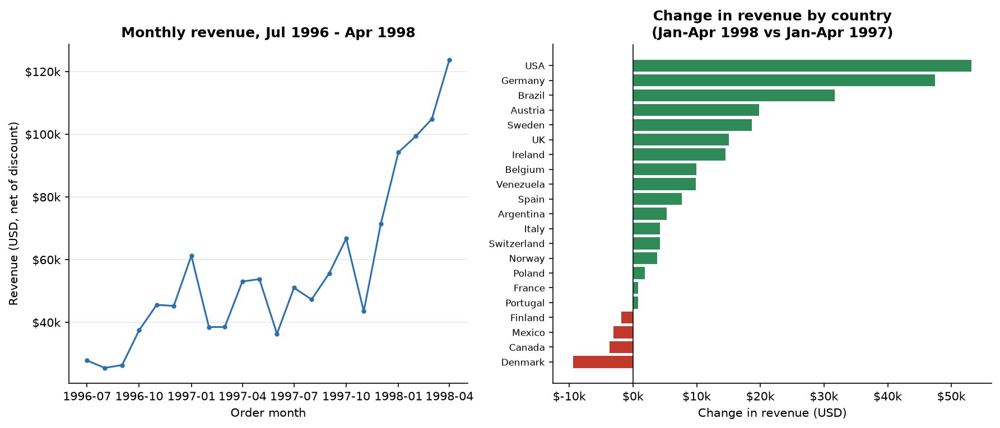
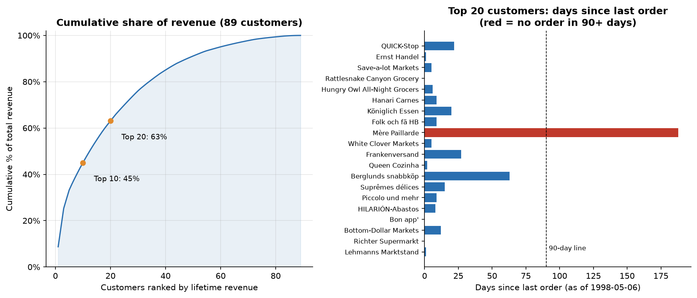
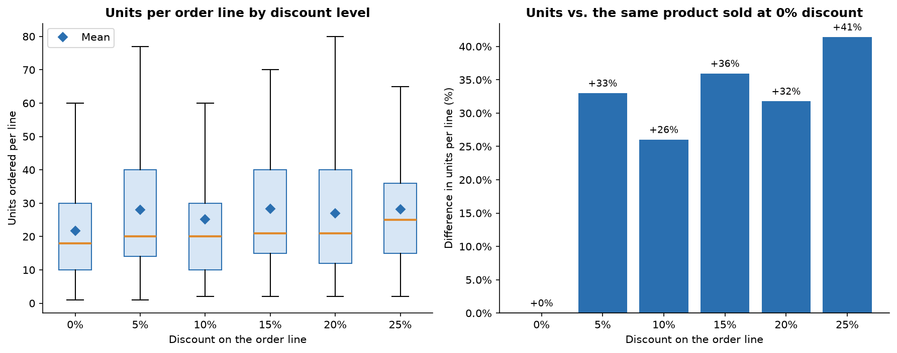
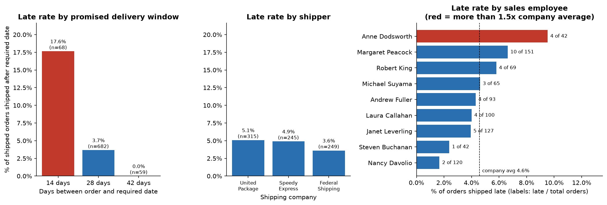
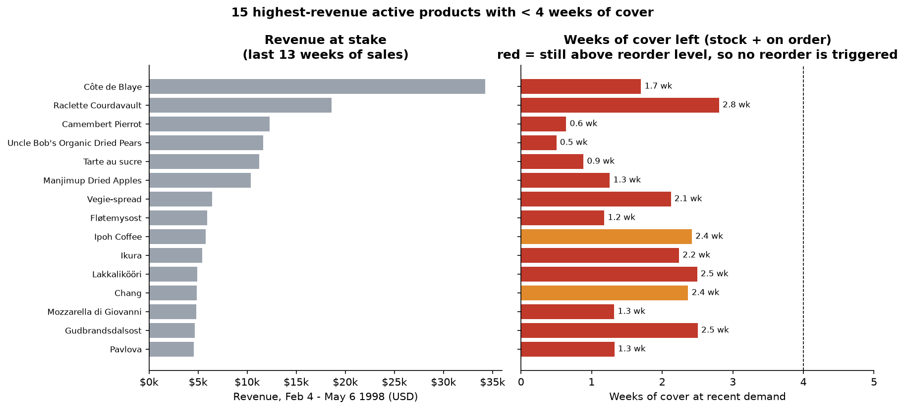

Summary for the manager
- The business is growing fast: revenue for Jan–Apr 1998 was 121% higher than for Jan–Apr 1997. The USA, Germany and Brazil produced 57% of that growth. The only shrinking markets (Denmark, Canada, Mexico, Finland) shrank because individual customers stopped ordering, not because whole markets fell.
- Revenue depends on a few accounts: the top 20 customers bring in 63% of revenue. 16 customers worth 9% of lifetime revenue have not ordered in over 90 days, and they can be named and called.
- Discounts above 5% buy nothing extra: a 5% discount comes with as large a jump in order size as a 25% one. Capping discounts at 5% would have kept about $58k (4.6% of revenue).
- Late shipments come mostly from 14-day "rush" promises: these are 8% of orders but 32% of late shipments. The choice of shipper matters much less.
- Stock-outs are coming: 27 of 69 active products have less than 4 weeks of stock at current demand. 21 of them are still above their reorder level, so the current reorder rules will not catch them.
Which country markets are growing or shrinking, and where should sales attention go?
Why it matters
Sales staff and marketing money are limited. Knowing which markets drive growth and which are slipping tells the manager where to add people and where to step in before losing ground.
Approach
Net revenue per order line = unit price × quantity × (1 − discount). The data stops on May 6, 1998, so calendar 1998 is incomplete. Comparing full-year 1997 with part-year 1998 would make every market look like it was shrinking. Instead I compare the same four months, January–April 1997 vs. January–April 1998, country by country. The few days of May 1998 are left out.

outputs/q1_country_momentum.csv.Main finding
Growth sped up sharply from late 1997. Every month of 1998 so far beats every month of 1996–97. Most of it comes from three large markets: the USA (+$53k), Germany (+$47k) and Brazil (+$32k). The declines are small and each one traces back to a single account. In Denmark, Simons bistro ordered $11.2k in Jan–Apr 1997 and nothing in Jan–Apr 1998. In Canada, Mère Paillarde ordered $10.4k and then stopped, while Bottom-Dollar Markets more than doubled.
Business implication
Put extra sales capacity into the USA, Germany and Brazil, where demand is clearly growing. Sweden (12×), Ireland (3.5×) and the UK (3×) grew fastest from a small base and are worth a closer look. The shrinking markets do not need a market-level strategy. They need someone to call the specific customers who went quiet (see Question 2).
How dependent is Northwind on a few customers, and which valuable customers are drifting away?
Why it matters
If a few customers produce most of the revenue, losing one of them hurts a lot. Spotting the large accounts that have stopped ordering lets the sales team act while the relationship can still be saved.
Approach
I ranked customers by lifetime net revenue and plotted the cumulative share (a Pareto curve). For recency I measured days from each customer's last order to the last date in the data (May 6, 1998). The typical gap between a customer's orders is 35 days (median), so more than 90 days without an order, about 2.5 normal gaps, is used as the "at risk" signal.

outputs/q2_top20_customers.csv.Main finding
Revenue is moderately concentrated: 20 customers (22% of the base) produce 63% of it. The good news is that 19 of the top 20 have ordered within the last 63 days. The one exception, Mère Paillarde (Canada, $28.9k lifetime), has been silent for 188 days, which by itself explains most of Canada's decline in Question 1. Further down the list, 16 customers in total have gone more than 90 days without an order.
Business implication
Assign a named account owner to each top-20 customer and set an alert for any of them that goes 60–90 days without ordering. Start a win-back call this month with Mère Paillarde and Simons bistro. Use the 16-customer lapsed list (from the script) as a re-engagement campaign list.
Do discounts lead to larger orders, or do they mostly give away revenue?
Why it matters
Discounts are given on 39% of order lines and cost $88.7k (6.5% of gross sales). If larger discounts do not bring larger orders, part of that money is being given away for nothing.
Approach
Comparing raw averages across discount levels can mislead, because some products sell in bigger quantities than others. So for each product I computed its average units per line at 0% discount, then measured how many more units it sold at each discount level (5%, 10%, 15%, 20%, 25%). Eight lines with odd discounts of 1–6% were left out. I also estimated how much revenue would have been kept if every discount above 5% had been 5% instead, assuming the same quantities.

outputs/q3_discount_levels.csv.| Discount | Order lines | Avg units / line | Units vs. same product at 0% | Discount given |
|---|---|---|---|---|
| 0% | 1,317 | 21.7 | — | $0 |
| 5% | 185 | 28.0 | +33% | $7,769 |
| 10% | 173 | 25.2 | +26% | $10,167 |
| 15% | 157 | 28.4 | +36% | $15,442 |
| 20% | 161 | 27.0 | +32% | $22,295 |
| 25% | 154 | 28.2 | +41% | $32,980 |
Main finding
Discounted lines are about a third larger than undiscounted lines of the same product. But the increase is almost the same at 5% as at 25% (+33% vs. +41%), while the cost grows fourfold: the 20% and 25% tiers alone cost $55k. Going beyond 5% brings little or no extra volume.
Business implication
Make 5% the standard discount and require manager approval above it. Had that rule applied over this period, Northwind would have kept about $58k (4.6% of net revenue), assuming the same quantities. Pilot the rule with a few sales reps before rolling it out.
Caveat: this is observational data. Reps may give big discounts because an order is already large, so the cause can run the other way. The flat increase across tiers still suggests the extra discount points do not drive the extra volume. A controlled pilot is the right way to confirm it.
Where do late shipments come from: the shipper, the sales rep, or the promise made to the customer?
Why it matters
A late shipment hurts the relationship with exactly the customers Question 2 says we cannot afford to lose. Fixing it requires knowing whether the problem lies with a carrier, an employee, or the delivery date we promise.
Approach
An order counts as late when its shipped date is after its required date. The 21 orders not yet shipped are left out. I compared late rates across three possible causes: the promised delivery window (required date minus order date, which is always 14, 28 or 42 days), the shipping company, and the employee who took the order. Labels show raw counts so that small groups are not over-read.

outputs/q4_by_promised_window.csv, q4_by_shipper.csv, q4_by_employee.csv.Main finding
The promised window is the strongest driver by far. Orders promised within 14 days are late almost five times as often as 28-day orders, and no 42-day order was ever late. Shippers differ only slightly (3.6%–5.1%). Differences between employees are partly a rush-order effect: the two reps with the highest late rates (Anne Dodsworth and Margaret Peacock) also have the largest share of 14-day orders (14% and 11%, vs. 8% company-wide). Anne's 9.5% rests on only 4 late orders, too few to blame on performance. When orders are late, they are very late: a median of 30 days from order to shipment, against 7 days for on-time orders.
Business implication
Stop treating lateness as a carrier problem. Accept a 14-day promise only when the items are confirmed in stock (this ties into Question 5) and flag rush orders for priority picking. Shifting more volume to Federal Shipping is a cheap secondary step. Do not discipline individual reps on this evidence.
Which products are about to run out, and are the current reorder rules catching them?
Why it matters
Demand has roughly doubled (Question 1). Stock levels and reorder points set for the old demand level will lead to stock-outs, lost sales and more late shipments.
Approach
For each of the 69 products that are not discontinued, I estimated current weekly demand as the units sold over the last 13 weeks of data (Feb 4 – May 6, 1998) divided by 13. Weeks of cover = (units in stock + units on order) ÷ weekly demand. Products under 4 weeks are flagged, and I checked whether each one is still above its reorder level, meaning the existing rule would not yet trigger a reorder. The stock figures are treated as a snapshot taken at the end of the order history.

outputs/q5_stockout_risk.csv.Main finding
Inventory has not kept up with demand. Some of the highest-selling items, including Côte de Blaye ($34k in the last 13 weeks, 1.7 weeks left), Raclette Courdavault and Camembert Pierrot (0.6 weeks left), will run out within weeks. The reorder rules are part of the problem: for 21 of the 27 at-risk products, stock is still above the reorder level, and 8 of them have a reorder level of zero. Only 3 active products look overstocked (over 26 weeks of cover), with about $3.8k tied up at list price.
Business implication
Place purchase orders this week for the at-risk list, starting with the highest-revenue items. Then replace the fixed reorder levels with a demand-based rule, for example reorder when cover drops below lead time plus 2 weeks, and recalculate it every month while growth continues. Keeping popular items in stock also reduces the rush orders that cause late shipments in Question 4.
Caveat: the dataset does not say when the stock levels were recorded or what supplier lead times are. If the snapshot predates May 1998, the true position may differ. The ranking of which products to check first still holds.
How these results were produced and checked
- Data: the Northwind Database workbook supplied with the course (sheets Orders, Orders Details, Product, Customers, Employees, Shippers, Categories, Suppliers).
- Revenue uses the unit price on each order line, not the current list price in the Product sheet. The two differ on 31% of lines because prices changed over time.
- Checks performed: every order line joins to an order and a product (0 dropped rows); total net revenue = $1,265,793.04; 2 customers in the customer list never ordered; 21 orders are unshipped; discount values are stored as inexact decimals and were rounded to 2 places before grouping.
- Reproduce:
pip install -r requirements.txtthenpython analysis.py. All figures go todocs/figures/, tables tooutputs/*.csv, and headline numbers tooutputs/results.json.
Code repository: https://github.com/meganshi-418/northwind-analysis